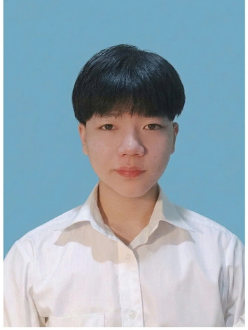

| HỌ VÀ TÊN | Trần Văn Bình |
|---|---|
| MÃ SINH VIÊN | k265520216450 |
| ĐƠN VỊ ĐÀO TẠO | Trường Đại học Kỹ thuật Công nghiệp - Đại học Thái Nguyên (TNUT) |
| NGÀNH ĐÀO TẠO | Công nghệ Kỹ thuật điều khiển và Tự động hóa |
| LỚP / KHÓA | K62ĐKT.K07 |
| EMAIL / SĐT | Email: tranbinh.zillnopro@gmail.com | SĐT: 0964952492 |
| CẬP NHẬT | 08/09/2026 |
Tôi là sinh viên năm nhất ngành Công nghệ Kỹ thuật điều khiển và Tự động hóa tại Trường Đại học Kỹ thuật Công nghiệp, tôi đang chủ động trang bị nền tảng năng lực số toàn diện đáp ứng tiêu chuẩn Công nghiệp 4.0. Hiện tại, tôi tập trung làm chủ các hệ thống đồng bộ dữ liệu đám mây, tối ưu hóa quản lý dự án qua Git/GitHub và ứng dụng AI vào nghiên cứu. Dù mới bắt đầu hành trình đại học, nhưng tôi đã tự xây dựng thành công trang Portfolio cá nhân trực tuyến trên GitHub Pages để lưu trữ sản phẩm thực hành. Với mục tiêu nắm vững chuyên môn điều khiển tự động và phát triển tư duy kỹ thuật, tôi luôn sẵn sàng học hỏi và tìm kiếm các cơ hội thực tập, trải nghiệm thực tế.
A. HỌC VẤN CHÍNH QUY
B. KHUNG NĂNG LỰC SỐ CÁ NHÂN
• Website Portfolio cá nhân: https://k265520216450-spec.github.io/portfolio/
• Trạng thái hệ thống: SYSTEM ACTIVE